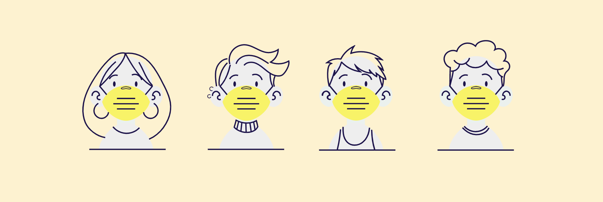
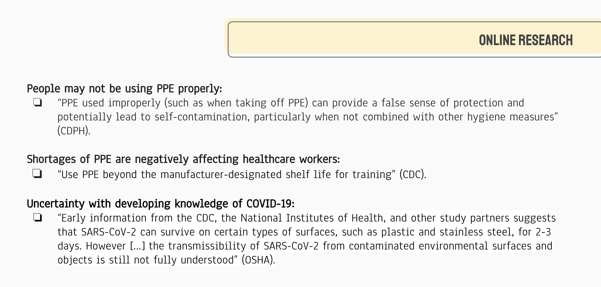
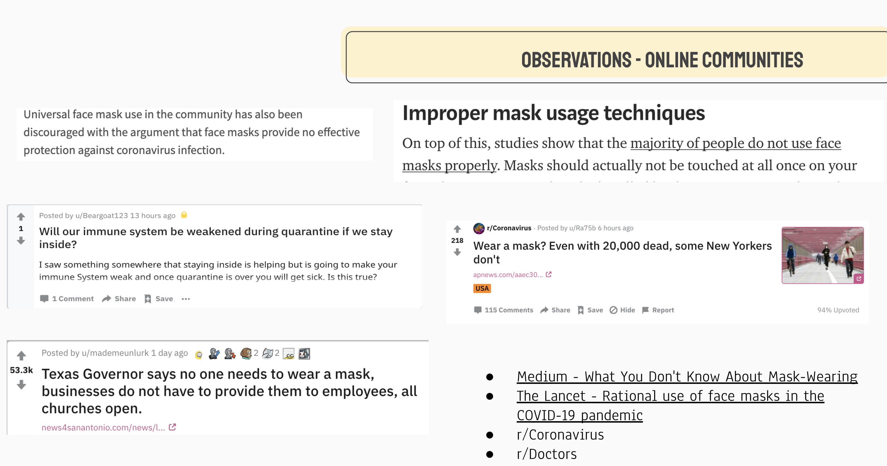
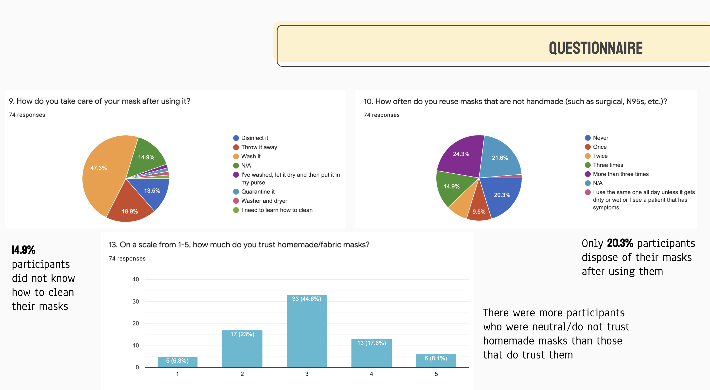
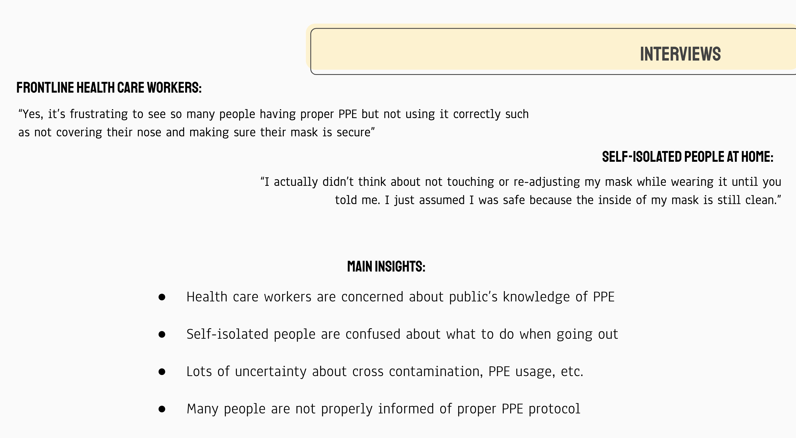
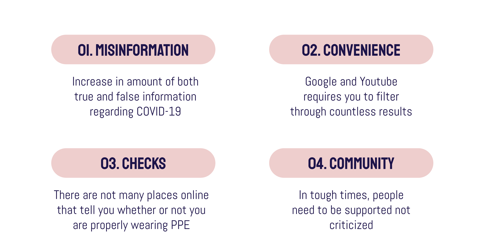
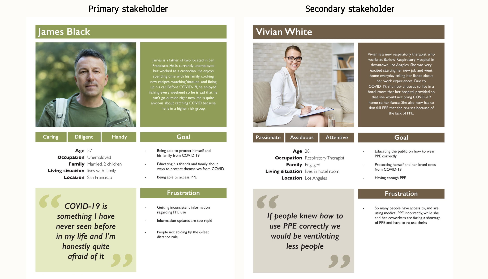
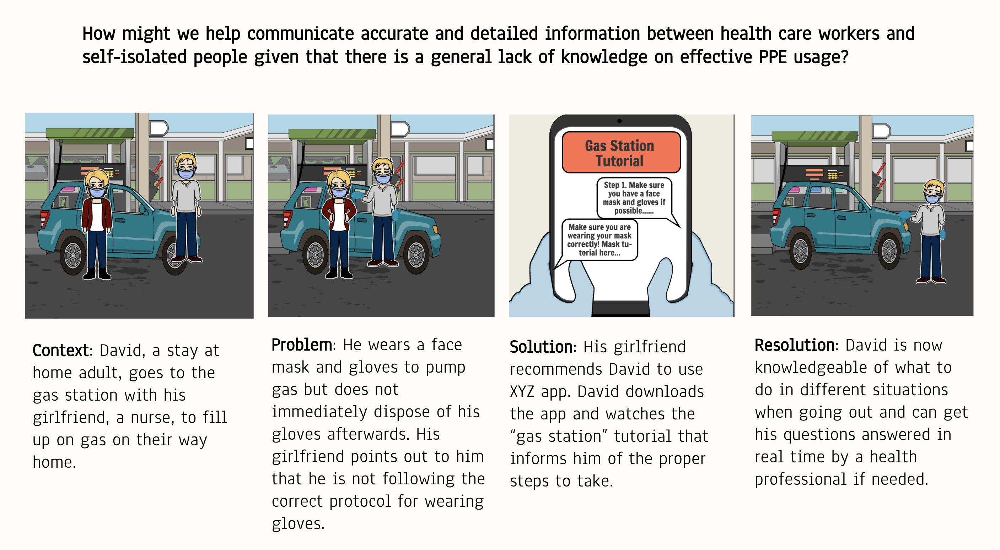
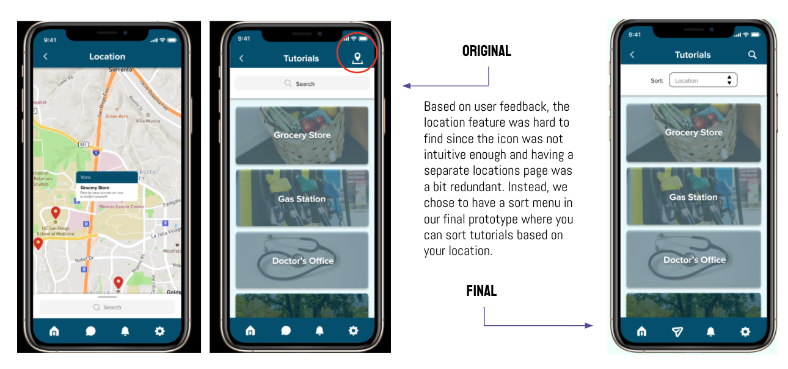
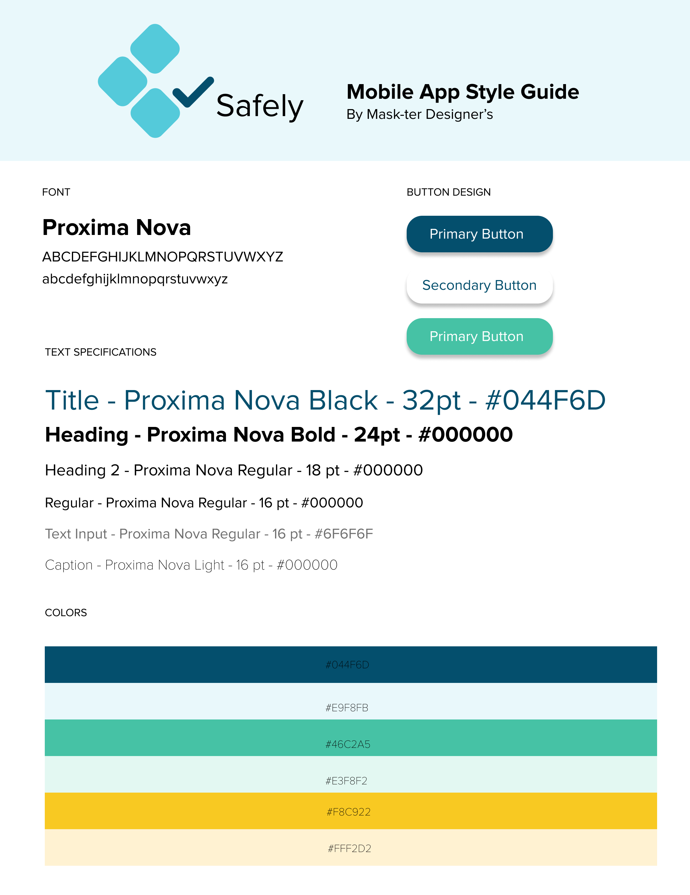

Safely
Ensuring your safety one step at a time via tutorials, communities, and mask checks
UC San Diego (DSGN 100 - Prototyping)

Team Members
Xirui He, Anna Wang, Brianna Catalan, Iris Chan, Aihang Jin
Context of our research
As a group of human-centered designers, we hope to utilize the power of design to address the COVID-19 pandemic and explore ways to support public safety. The research topic we are interested in is safety and sanitation. Many members of our group are affiliated with healthcare and frontline workers, so the topic of safety, sanitation, and PPE usage arose almost naturally. There are different measures we take to protect ourselves when we leave our homes, and we were motivated to find ways to better protect ourselves as well.
Problem Statement
Research Process
Collecting User Insights
First, we conducted online research - observing online communities, questionnaire, interviews - to explore the problems people are facing regarding sanitation and safety during their time in quarantine or going out to work. We found discussions on Reddit, Facebook, Instagram, and online articles, then conducted online surveys and interviews to further understand people's opinions.
Here is what we summarized from online research:




Problem Domain
We decided to tackle four main topics – misinformation, convenience, checks, and community – all of which were prevalent when doing our user research.

Personas
Based on our research, we decided to put self-isolated people at home to be our primary stakeholders, and healthcare and essential workers to be secondary stakeholders.

Storyboards
With these user personas in mind, we crafted storyboards demonstrating one of many scenarios in which our users will benefit from our app.

Low Fidelity Prototype
The first set of low fidelity prototype was done digitally on Balsamiq. Our goal was to consolidate our ideas into concrete features of the app and start visualizing how they would look like. Although there are many limitations doing the prototype on Balsamiq, we were able to convey the ideas and star collecting feedback on general functionality of the app from users.

User Testing
By testing our prototype with both primary and secondary stakeholders, we took notes on the points below:
General/functionality:
- News sections doesn't fit into our objective
- Easier way to browse and choose tutorials
- Need a way to verify healthcare workers
- We should delve into the tutorial feature a bit more
- Make the community and live chat feature more distinct
UI elements:
- Home button missing in the menu bar
- Links between tutorials page and home page
High Fidelity Prototypes
When the user opens the app they are greeted with the landing page, then the login page. After signing up or logging in, they are directed to the home page where they can select from three main features they want to utilize. Tapping into the Community feature, they can ask direct questions and receive a live response, post to their local community board, or view and comment on posts in the healthcare worker forum and if they are a healthcare worker make a post. Using the tutorials feature, users can view step-by-step directions on how to interact in the environments and situations they may face during COVID-19. Using the safety check feature, users can check with an AI detector whether they are wearing their face mask correctly and learn exactly why they are not. With Safely, users can also direct message other users they encounter in the community feature, check notifications to their post and comments, and customize their app settings.

User Testing on High Fidelity Prototypes
Basing on user testing, we have concluded several points that we would improve on in the final prototype:
Before vs. After
Based on user testing feedback and advice from our TAs, we made the following changes to finalize the prototype: 
Our complete set of final prototypes

Reflection
So in conclusion, what makes our app, Safely, unique? Well, it’s a platform where you can directly communicate with a verified licensed healthcare professional for free, get real-time answers from our AI bot that generates the most relevant responses so you don’t have to filter through countless results, use our AI detector to ensure you’re wearing your mask safely in real-time, and gain knowledge through multiple straightforward tutorials without having to watch a video. It’s everything you would want to know about safety and sanitation is in one convenient app!
Style Guide

Back to Projects
© 2020 Xirui He
© 2020 Xirui He